// UN ECO EN LA CIUDAD
Este espacio existe porque afuera el ruido es demasiado fuerte y las pantallas cambian demasiado rápido. No hay algoritmos acá. No busco retener tu atención, ni convencerte de nada. Esto es solo un fragmento de tiempo congelado, o al menos el mío. Mi programacion es amateur, pero me gusta aprender y experimentar. No hay nada que vender, ni nada que ganar. Solo un rincón donde puedo ser yo mismo y compartir mis pensamientos, mis poemas y mis melodías con quien quiera escucharlos...
👁️ Pensamiento actual: Mi procrastinacion esta matandome casi tan rapido como lo haria un veneno a un anti-vacunas, pero se soluciona haciendo las cosas, no necesariamente con un sentido o buena onda, pero haciendolas, sabiendo que cosa estoy haciendo, no soy un robot desalmado.
💿 Frases de Gustavo C.: "Hay algo oculto en cada sensación, ella parece sospechar, parece descubrir, en mí... debilidad"El tiempo pasa y pasa y nunca deja de correr, y mi corazon corre como loco ante este nuevo tormento... como odio este sentimiento... lo odio porque es tan unico...
🎮 Estado virtual: Mi pequeño proyecto casi queda en el olvido como la mayoria de sus hermanos... lastima que quiero estudiar y vivir de estas habilidades rudimentarias que tengo... pero al menos volvi, no como mi papa.
Sucesos recientes en la terminal:
- [•] 06/09 Gatefold con poema + Status + Reactions + filtros + llaveros.
- [•] 16/08 Primer altar dedicado a Gustavo Cerati y Soda Stereo (shrine.html + img/shrines).
- [•] 16/08 Botones de like eliminados (el servicio LikeBtn dejó de funcionar).
- [•] 08/08 Reproductor retro con play/pausa.
- [•] 08/08 Likes personalizados con la paleta del sitio.
- [•] 03/08 Widget "Estoy escuchando ahora" conectado a Last.fm.
- [•] 02/08 Traductor automático ES→EN + primer botón de amiga (camiqseb707).
- [•] 02/08 Imágenes en "Recomiendo" y "Favoritos" + pestaña con nuevas recomendaciones.
Sobre mí
Soy un adolescente que aprendió tarde a cómo serlo, o al menos eso pienso. El internet actual es un asco en su mayoría, no tengo control de nada, todo es IA o plagiado, y ¿qué es más efectivo que hacerme mi propio "Rincón"? Y de paso aprendo a programar cosas, aunque siempre fui más de la música, los videojuegos, la literatura y el dibujo, pero creo que no hay límite para aprender cosas que te gustan.
// LOS SOPORTES DEL RINCÓN
I. El Ruido del vacío
Aunque mi alma no es solo música, este lugar dentro de lineas y pixeles me deja liberar y expresar aquellos sonidos y sensaciones, en forma de textos o de codigos mal escritos. La atmósfera única de Bocanada y el deseo mudo de domar las cuerdas de una guitarra para que griten lo que yo no puedo decir ni susurrando. Cerati entendía que el vacío es un lugar normal, y que solo nosotros podríamos llenarlo.
II. Lazos y Humo
Me gusta decir que me parezco a personajes o a gente, pero a veces ni siquiera me parezco a mí mismo, y eso creo que me hace más "yo". Encuentro pedazos de mi propia realidad en la vida urbana de los 2000, ojalá haberlo vivido... a veces me pierdo, otras me encuentro como en las siluetas que se desvanecen bajo la luz de los faroles, y en ese grito desesperado por una libertad absoluta y salvaje que solo encuentro en la música y mis aficiones.
// POST SCRIPTUM
Este sitio se llama Rincón con olor a acero porque mi lugar en este mundo es pequeño, por eso trato de hacerlo unico, y huele a acero porque me gusta el olor a la sangre, siento que es algo más que un olor, es una memoria o sintemiento que trasciende lo profundo, aunque eso seria especular sobre un gusto. Es un pasillo de recuerdos y espejos rotos, hecha de líneas de código para proteger los pensamientos que todavía siguen vivos, en un mundo donde casi todos mataron su propia mente.
[ escritos y poemas ]
Los poemas están escritos en español.
(Dis)Atraccion
Mi colera fue tal al vere llegar,
que deje de escucharme a mi,
por la costumbre mia de solo mirarte a ti,
pero pude desviar mi vista en cuanto de vi,
no se si habre avanzado,
pero algo seguro que aprendi.
Paciente Asintomatico
Aquel peso causante de mi desgracia emocionall
por fin he de verte fuera de mi mismo,
sin un huesped para intoxicar...
no eres mas que un parasito huerfano.
.
Si mi cuerpo aun fuese el mismo,
mis dolores no estarian guardados,
sino aun clavados cuales estacas en mi,
.
Ya no sufro del mañana ni el ayer,
aunque no se donde voy,
disfruto del ahora para siempre,
ya que no vivo del ayer, porque siempre es hoy.
Malinterpretacion
Crei haberte extripado cual tumor,
sin embargo, vuelves a aparecer,
me has infectado con un hongo,
uno que Rosa parece,
pero un cancer es
.
No tengo palabras para describirlo,
esa "cosa" que sucede al volver a verte
odio con notas de desgracia y color de felicidad
si pudiera matarte... no podria,
estaria apuntando el arma hacia mi corazon,
el cual crei que devolverias...
.
Me buscas pero no me dejas encontrarte,
me quieres pero no quieres que te quiera,
me extrañas y anhelas...
pero siempre que hablo, tapas la oreja.
Amor Pagano
Los músicos lloran en partituras,
Los escritores escriben lamentos,
Y los tontos como vos y yo;
Amamos desde el tormento.
.
Si te sacara de mi cabeza,
¿Qué sería de mis escritos?
Ciegos sin bastón y sordos sin manos,
Ellos han de ser afortunados,
Vivir sin mi musa sería un masoquismo de lo más pagano.
El Vacío Imperturbable
Escribir sobre emociones es peculiar,
Porque aunque no las sienta,
A veces las duelo,
Pero a veces las siento,
Sin que nada me duela.
.
No hay vacío más oscuro que aquel del alma,
Con nada se llena y con nada se vacía,
Aunque nada te duela y nada te anime,
Sigue imperturbable ahí,
esperando agrandarse.
Flor de Primavera
No hay estación que más odie que primavera,
No puedo respirar ni pestañear sin sollozar,
Tampoco pude nacer tranquilo,
Porque la más bella y dolorosa flor,
Comparte estación de nacimiento conmigo.
.
Ya no lloro en primavera,
Solo lagrimeo por pena,
Una que me causaste tú,
Flor venenosa pero al mismo tiempo,
La más hermosa.
Placer Vacío
La clave del amor verdadero es simple,
Porque simplemente no existe,
cuando nos buscábamos sin pensarnos,
Y cuando nos pensábamos sin buscarnos.
.
Somos tan raros los seres humanos,
Permanecemos en el dolor familiar,
Por miedo al dolor desconocido,
Pero nos vamos del placer conocido
por un placer prometedor pero vacío.
En Contramano
Si leyeras mis lamentos,
Y oyeras mis llantos,
¿Volverías a la vida?
Aún no acepto que estés muerta,
Mi bella amada mía...
.
Quisiera que fueras conmigo,
Pero vas en contramano de tu alma,
Porque aunque fuese con un cuchillo,
Dejaría que entres por última vez en mí.
Noche en Día
Solo cuando ella se asoma,
Solo en su hermosa presencia,
Se puede borrar aquella oscuridad,
Y hacer que la noche se haga día.
.
Es casi un arte romántico,
Tan hipnótico e increíble,
Que me enamora con tan poco,
Con tan solo sus bellos y blancos ojos.
Historias del Viento
El viento espera,
El viento escucha,
El viento recuerda,
El viento cuenta,
Cuenta historias que nadie recuerda,
Salvo por almas amantes en pena.
Sentirte con el Alma
¿Te habrás enamorado de alguien?
Decías que solo un ciego podría amarte,
Entonces, si cierro los ojos...
¿me dejarías?
O será que... ¿me equivoqué de vida?
.
Cantabas tan hermoso como la lluvia mañanera,
Daría mis oídos para que cantaras,
Porque escuchar está de más,
puedo sentirte con el alma.
Vivir por Uno
En este mundo hay gente que moriría por uno,
Gente que mataría por uno,
Gente que te mataría por uno,
Y muy poca gente que vive por uno.
Es fácil quitar una vida, y escuchar el último suspiro,
Pero en el momento que escuchas un primer latido aprendes la diferencia entre morir por alguien y vivir por ese alguien.
El Porqué
Por desgracia, en este mundo hay gente,
Gente que me hace querer replantear si vale la pena morir por ella,
Gente que me hace replantear el porqué vivir y morir por ella,
y esa gente, que me hace querer seguir viviendo.
El Deseo
Sin importar cuánto nos queríamos,
Ni cuántas cartas nos mandamos
y menos cuántas canciones nos dediquemos,
Siempre viviremos con el profundo deseo de haber dado y querido más.
.
El deseo nos movió y nos dejó ser,
El deseo nos hizo caminar para después correr a abrazarnos,
Y de tanto deseo solo conseguimos un bello recuerdo...
Entre Cualquieras
Mientras yo caminaba,
admiré el techo de la creación,
El cielo que sobre mí estaba,
Y antes de bello llamarlo, la vi,
para cualquiera, una cualquiera,
Pero para mí era 'ella'
entre tantas cualquieras.
Cuerpo vacío
Allí me vi,
en el lugar donde morí,
no había sangre ni desastre,
solo un cuerpo en dónde recién viví.
.
Bajo el farol callejero ,
la mera imitación del sol,
vi la luna en el vacío del cielo,
dónde me perdí en su esplendor.
.
Y durante la pudrición,
Su luz me reconstruyó,
Haciendo ese cuerpo,
Abandonado y vacío,
Tuviera algo por que existir
Cuando no sabía qué buscar...
Cuando no sabía que buscar ,
Cuando no tenía con quién conectar,
Cuando no había nada ,no más un
dolor punzante y a la vez ardiente...
.
Ante una luz aparece una figura,
Desdibujada por el destino,
Rota por el mundo ,
Oscura para quien se niega a verla.
.
Pero siendo mi boleto de ida ,
A un lugar donde no quiero irme.
Mi lugar seguro, mi hogar.
Pensar...
Pensar, es algo que nos mantiene
vivos ,
algo que nos mueve ,
pero, sin embargo, a mí me va
matando.
.
Ya no te pienso como te pensaba,
puede que porque no te amo como
antes amaba,
Pero de lo que estoy seguro que
pasaba,
Es que poco a poco , se estaba yendo
el brillo en tu mirada
Abismos
Me he negado a buscarte en las
páginas de los textos que escribí para
ti, pero tal parece que aún si mirase
al más vacío de los abismos, me
recordaría a tus profundos y oscuros
ojos que antaño me guardaban amor.
Marca
No es posible de mi parte odiarte.
quisiese sacarte de mi mente,
Pero no puedo borrar aquella marca,
Que con una pluma mística y a mano
alzada ,
Has dejado lo que me queda de alma.
¡Oh mi perdida Rosa!
¡Oh mi perdida Rosa!
Tan solo te fuiste un rato ,
Y tú color ya has cambiado ;
De tu bello rojo sangre te has
degradado a un opaco gris sin vida.
.
Cuánto me lamento mi Rosa...
De no haberte cortado cuando la
maleza comenzó a pudrirte ,
Y tus espinas se volvieron cuchillas.
Cielos
Cuando miro a los cielos ,
¡Oh qué hermosos los cielos!
Tan bellos e imperturbables ,
Incluso con nubes y rayos,
Muy detrás, ellos siguen brillando.
Melodía apagada
Yo era tu melodía ,
Vos mi voz ,
Que habrá sido de nosotros?...
Que mi cuerda se cortó...
Y tú voz se apagó.
Sin título
Entre cada punto,
Luego de cada coma,
y en cada espacio...
solo se halla una gran tristeza,
que ningún libro narra,
ni tampoco nadie atesora...
Galería
🎮 Juegos

Dark Souls
Un juego que enseña que no toda caida es un fracaso absoluto.
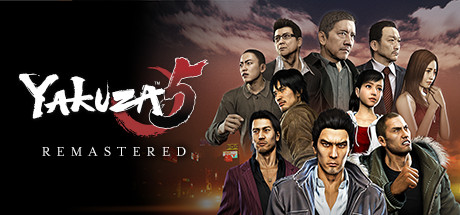
Yakuza 5
Drama, peleas, karaoke y una historia que te parte al medio. Japón en su máxima expresión.
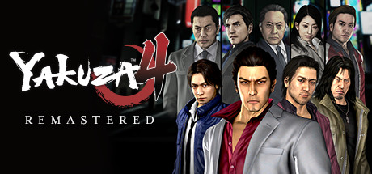
Yakuza 4
Introducción de nuevos personajes y mecánicas, el inicio del cambio en la saga.
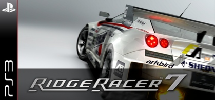
Ridge Racer 7
Enérgico, calmado y estresante, todo en una pista, mientras derrapas y te habla una chica japonesa con musica de fondo, epico.

Red Dead Redemption
No hay mucho por decir
🎵 Música
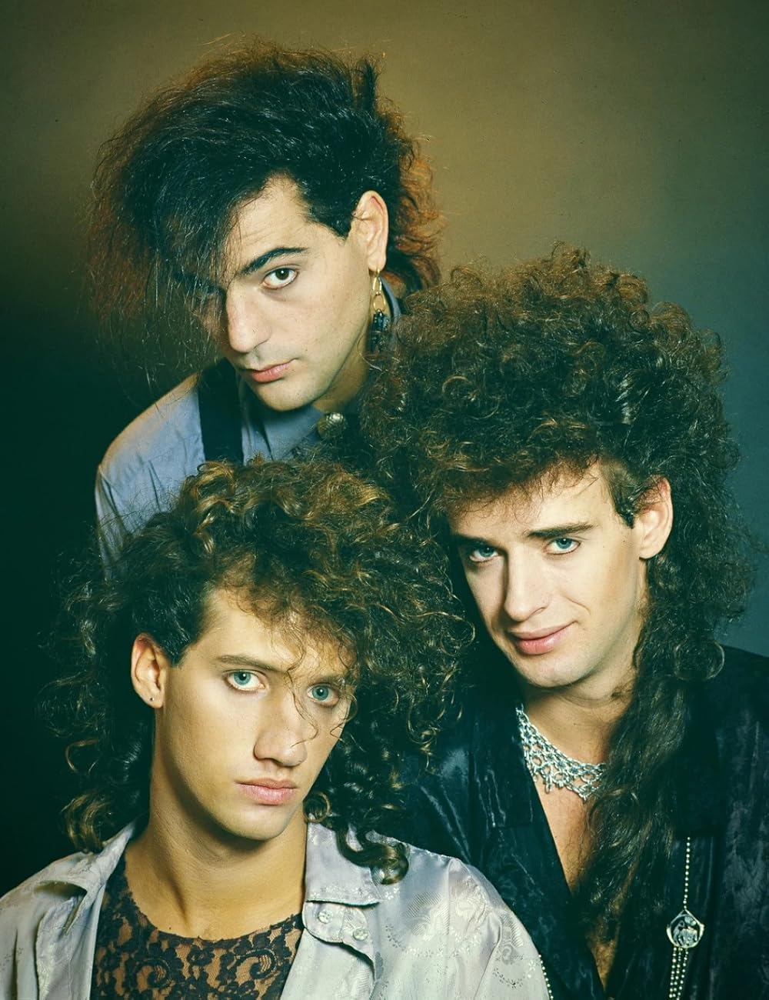
Soda Stereo
La banda que nos enseñó que el rock en español podía ser universal. Cerati era un arquitecto del sonido.
- Soda Stereo (1984)
- Dynamo (1992)
- Doble Vida (1988)
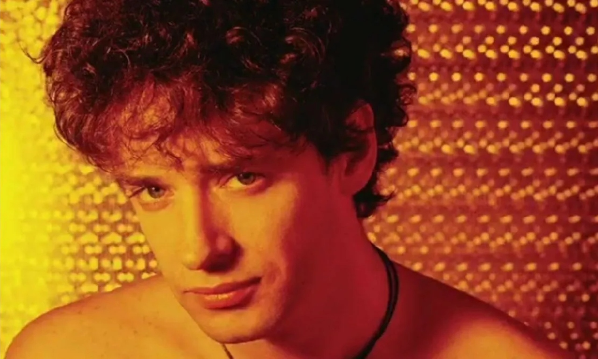
Gustavo Cerati
El viaje personal de un artista que no dejó de reinventarse. Cada disco es un mundo aparte.
- Amor Amarillo (1993)
- Bocanada (1999)
- Siempre es hoy (2002)
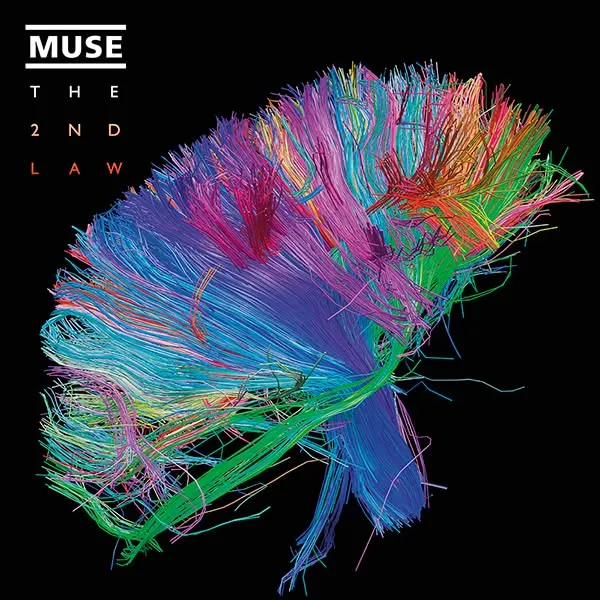
Muse
Banda con una historia y un sonido impresionantes , muy expresiva.
- Absolution (2003)
- Black Holes and Revelations (2006)
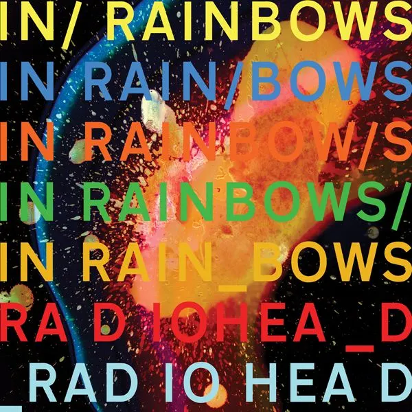
Radiohead
La banda que nos mostró que el rock podía ser frío y cálido al mismo tiempo.
- OK Computer (1997)
- In Rainbows (2007)
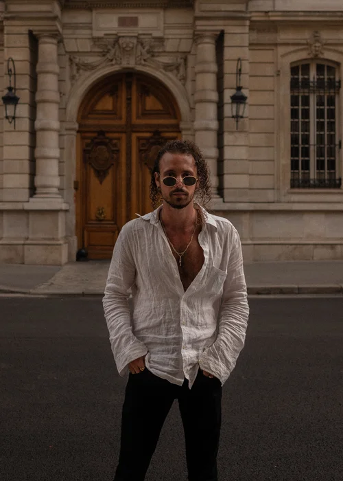
Eric Christian
Mi favorito en la música clásica actual. Armónico y con una presencia que moldean tu alma con su melodía.
- Scenes from Paris (2021)
🎯 Recomiendo
Cosas que vi, leí o jugué y me dejaron algo. Sin spoilers (casi).
🎬 Películas
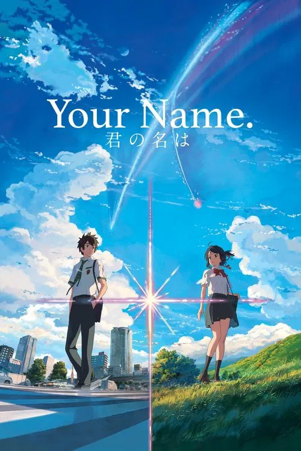
Tu nombre
Dos vidas que se cruzan sin tocarse. La belleza de lo efímero con una banda sonora que no se olvida.
★★★★☆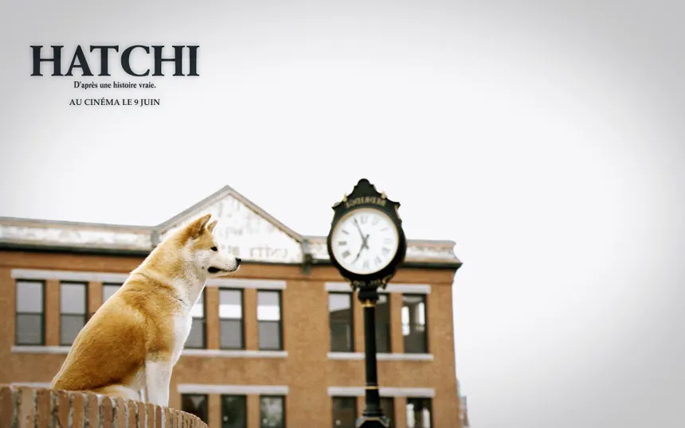
Hachiko
La fidelidad hecha película, contada sin golpes bajos. Prepará pañuelos.
★★★★★📺 Series
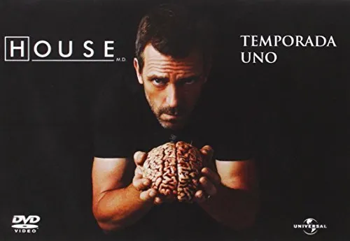
Dr. House
Un médico insoportable que casi siempre tiene razón. Misántropo, brillante y adictivo.
★★★★☆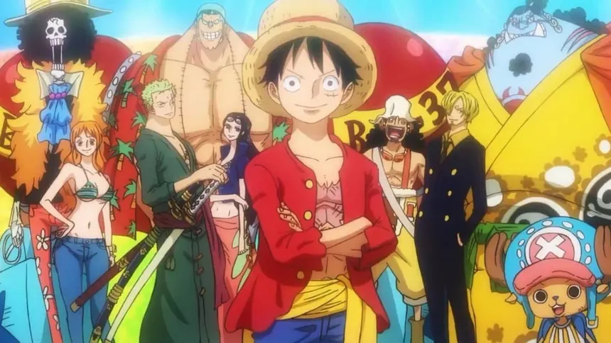
One Piece
La aventura más larga del mundo que nunca pierde el corazón. Libertad como motor.
★★★★★📖 Mangas / Lecturas
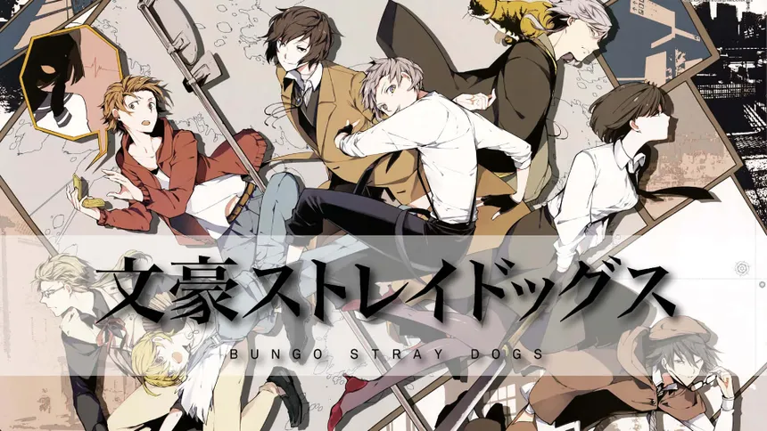
Bungo Stray Dogs
Escritores famosos convertidos en detectives con poderes. Acción, humor y referencias literarias.
★★★★☆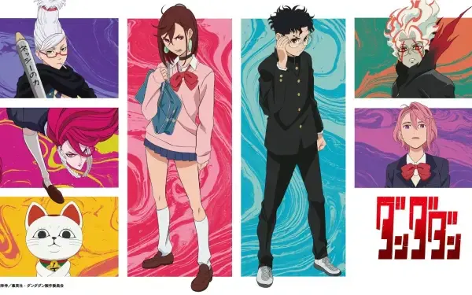
Dandadan
Sin filtros y sin freno. Fantasmas, aliens, caos y mucho corazón escondido.
★★★★☆🎮 Juegos
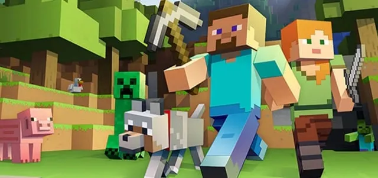
Minecraft
El ladrillo que lo cambió todo. Crear, explorar y perderse horas en un mundo infinito.
★★★★★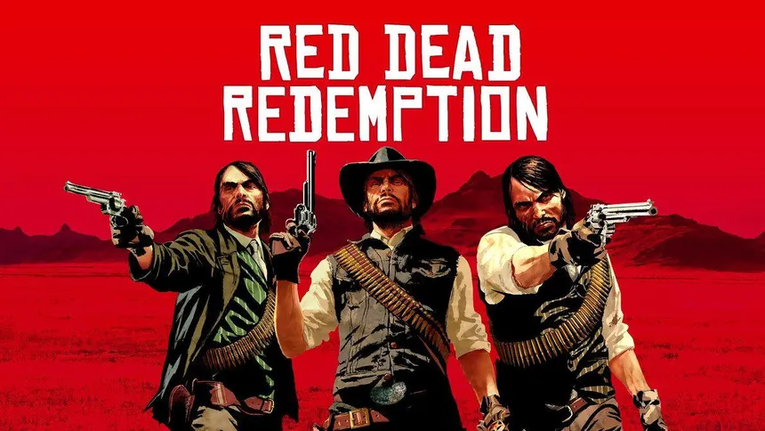
Red Dead Redemption
Un western que se toma su tiempo. El silencio de la llanura también cuenta la historia.
★★★★★Guestbook
Dejame un mensaje, me encanta leerlos.